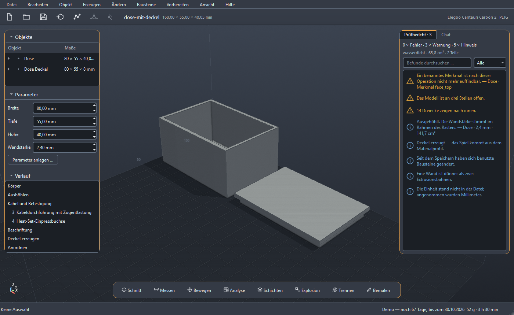
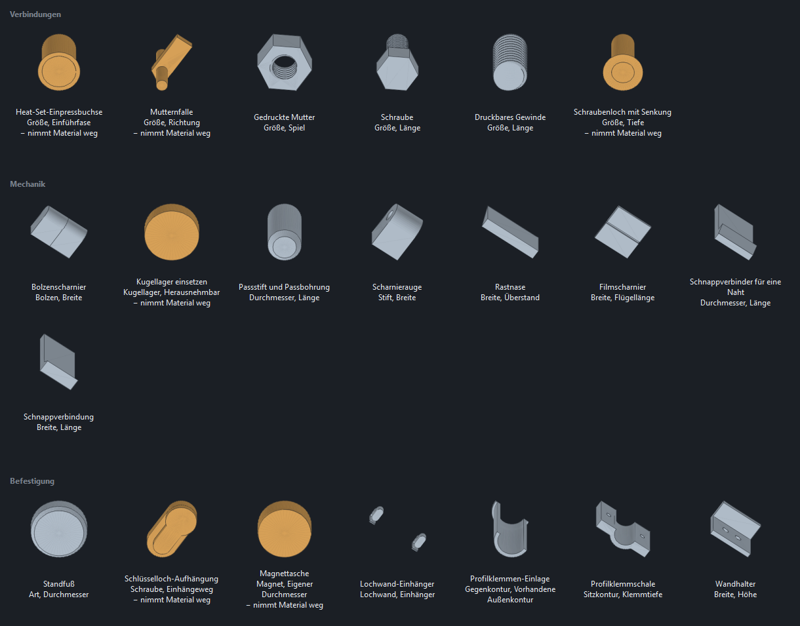

Das heruntergeladene Teil passt nicht. Mach es passend.
STL hereinziehen, Bohrung setzen, Deckel dazu, Passung aus dem Materialprofil — und vor dem Slicen steht im Prüfbericht, was beim Drucken schiefgeht. Solidon3D bearbeitet fremde Modelle, konstruiert eigene und bereitet erzeugte auf. Lokal, ohne Konto, ohne Abo; ein KI-Agent bedient dieselben Werkzeuge wie die Menüs, und die Geometrie rechnet Code, nie das Sprachmodell.
Vollständig und ohne Schlüssel: keine Wasserzeichen, keine Exportsperre, keine gesperrte Funktion. Sie läuft bis zum 30. Oktober 2026 und lässt sich danach nicht mehr starten — deine Projektdateien bleiben davon unberührt.
Bescheid geben, wenn sie da istWindows meldet bei einer neuen, noch unsignierten Anwendung einen blauen Hinweis: Weitere Informationen → Trotzdem ausführen. Die Signierung kommt, sobald das Zertifikat steht.
Neue Versionen. Ab der nächsten Version sieht Solidon beim Start selbst nach, ob eine neuere da ist, und bietet sie zum Laden an — geladen und installiert wird erst auf deine Bestätigung, abschalten lässt es sich in den Einstellungen. Die jetzt angebotene fragt noch nicht von allein: dort führt der Weg über Hilfe → Nach einer neuen Version sehen.
- Läuft offline
- Kein Konto
- Keine Telemetrie
- Deine Dateien bleiben deine
- Windows, macOS, Linux

Kennst du das?
Die vier Sätze, die beim Drucken am häufigsten fallen — und was Solidon3D daraus macht.
-
Das Loch ist 0,2 mm zu klein, und ich habe kein CAD.
Fläche anklicken, Maß ändern. Auch in einer fremden STL-Datei — Bohrungen, Taschen und Wandstärken sind benannte Merkmale, keine Dreieckswolke.
-
Der Druck ist bei 80 % abgebrochen, wegen einer Insel.
Die Schichtanalyse zeigt sie vorher. Überhänge, Inseln, zu dünne Wände und der Stützbedarf — bevor der Slicer die Zeit verbraucht.
-
Der Deckel klemmt. Beim dritten Versuch passte er.
Passungen aus dem Materialprofil. Spiel, Presssitz oder bündig werden aus einer einmal gedruckten Kalibrierleiter abgeleitet, nicht geschätzt.
-
Das Teil ist 40 mm zu groß fürs Bett.
Teilen und verstiften in einem Schritt. Auto-Split legt Passstifte, Bohrungen und die zugehörigen Passungen gleich mit an.
Vier Wege zum Teil
Alle vier führen in dieselbe Szene, denselben Verlauf und denselben Prüfbericht. Du entscheidest je Teil, nicht je Programm.
Fremdes Modell ändern
Datei ablegen — oder den Verweis von MakerWorld, Printables oder Thingiverse gleich aus dem Browser ins Fenster ziehen, ohne Umweg über den Download-Ordner. Prüfbericht lesen, Fläche oder Bohrung anklicken — dann im Chat sagen, was werden soll, oder aus dem Kontextmenü wählen. Vorher/Nachher ansehen, übernehmen, exportieren.
Neu bauen mit Maßen
Beschreiben, was gebraucht wird. Der Agent legt Parameter an und setzt geprüfte Bausteine — Gewinde, Einpressbuchsen, Scharniere. An den Zahlen drehen, das Modell folgt sofort.
Aus Text oder Bild
Ein generiertes Mesh durchläuft automatisch die Reparaturkette, wird auf eine Auflösung gebracht, mit der sich arbeiten lässt, bekommt einen Prüfbericht und wird bei Bedarf geteilt und verstiftet — bis es druckbar auf dem Bett liegt. Braucht ein lokal laufendes ComfyUI und eine kräftige Grafikkarte; das Erzeuger-Modell ist TripoSG unter MIT-Lizenz, und ein Befehl richtet es ein. Ohne beides bleiben Weg 1 und 2 vollständig nutzbar.
Figuren von Hand
Manche Formen lassen sich nicht bemaßen. Grundkörper grob zusammensetzen, weich verschmelzen, gleichmäßig vernetzen — dann mit sechs Pinseln ausformen. Der ganze Vorgang bleibt ein Schritt im Verlauf und damit änderbar.
Was kein Sculpting-Programm kann: Während du formst, läuft die Wandstärke mit. Zu dünne Stellen stehen als Zahl in der Leiste — nicht erst im Slicer, wenn die Form fertig ist.
Was den Unterschied macht
Das Wichtigste in je einem Satz — alle Funktionen mit Bildern auf der Funktionsseite.


- Ein KI-Agent, der nichts rät. Ein Satz im Chat wird ein Vorschlag, den ein einziges Undo vollständig zurücknimmt. Die Geometrie rechnet Code, nie das Sprachmodell — und das ist gemessen: eine Suite aus 39 Referenzanfragen läuft gegen jede Änderung am Agenten.
- Prüfbericht vor dem Druck. Offene Stellen, falsche Normalen, Wände unter zwei Bahnen — jeder Befund springt an die Stelle im Modell und trägt einen Handlungsvorschlag.
- Eine Zahl ändern statt neu bauen. Der Verlauf ist non-destruktiv: Wandstärke von 2,40 auf 3,60, und Aushöhlen, Deckel, Bohrungen und Passungen rechnen sich neu.
- Geprüfte Bausteine, vom Gewinde bis zum Lochwand-Einhänger. Die Maße kommen aus einer Normteiltabelle, nicht aus dem Bauchgefühl — und jeder ist über seinen ganzen Maßbereich durchgerechnet.
- Eigene Bausteine ohne Programmieren. Einmal gebaut, im Katalog als eigener Baustein gespeichert — mit einstellbaren Maßen und geprüftem Bereich. Er reist als Rezept in jeder Projektdatei mit, die ihn benutzt: Schritte und Werte, kein Programm.
- Schichtanalyse ohne Slicer. Überhänge, Inseln, Brückenweiten und Stützvolumen; die Orientierungssuche schlägt die Lage vor, die am wenigsten davon erzeugt.
- Skizzen mit Zwängen. Zehn Bedingungen halten die Zeichnung zusammen, und der Umriss geht als exakte Kurve in den B-Rep-Kern — ein Kreis wird ein Zylinder, kein Vieleck.
Wenn das Modell aus einer KI kommt
Ein Generator prüft, ob das Netz geschlossen ist. Nicht geprüft wird, ob die Wand dicker ist als deine Düse, ob ein Überhang trägt, ob eine Insel in der Luft anfängt und ob das Ganze auf dein Druckbett passt. Genau da fängt Solidon3D an — und danach lässt sich jede Zahl noch ändern.

Wasserspeier 
Laterne 
Industrieventil 
Drachenschädel
Vier davon aus je einem Satz, in Solidon3D erzeugt und geprüft — alle geschlossen und aus einem Stück, rund zwanzig Sekunden das Stück. Der Generator läuft dabei auf deinem Rechner: kein Konto, kein Upload, und das Modell dahinter steht unter der MIT-Lizenz.
Der Weg vom Generator zum DruckWas Solidon3D nicht ist
- Kein Slicer. Solidon3D analysiert und bereitet vor; die Druckdatei erzeugt weiterhin dein Slicer — an den übergibt Solidon3D direkt und liest seinen G-Code zur Gegenprobe zurück.
- Kein Cloud-CAD. Keine Konten, keine Ablage im Netz, keine Telemetrie. Projekte sind Dateien auf deinem Rechner.
- Keine Maßgarantie aus generierten Meshes. Was aus Text oder Bild entsteht, wird druckbar gemacht — maßhaltig konstruiert wird über Wege 1 und 2.
- Die KI bringt ihre eigenen Kosten mit. Der Chat läuft mit eigenem API-Schlüssel — die Modellnutzung rechnet der Anbieter ab, typisch sind Centbeträge je Vorschlag. Kostenlos geht es lokal über Ollama; ein taugliches Modell (ab etwa 14 Milliarden Parametern) braucht dafür eine Grafikkarte mit 16 GB Speicher.
Erst die Demo, dann einmal kaufen
Bis zum 30. Oktober kostet Solidon3D nichts. Danach ein Einmalkauf — kein Abo, kein Konto, keine Funktion, die nach zwölf Monaten aufhört zu funktionieren.
Vollständig, ohne Schlüssel, ohne Konto. Die Vollversion folgt zu 69 € — einmalig, inklusive aller 1.x-Updates. Der Einführungspreis gilt bis zum 31.01.2027, danach kostet sie 99 €.
Bescheid geben, wenn sie da ist- Die Demo ist nicht beschnitten. Keine Wasserzeichen, keine Exportsperre, keine gesperrten Funktionen — sie hat ein Enddatum, sonst nichts.
- Einmal, nicht jeden Monat. Die KI-Dienste, mit denen 3D heute beworben wird, rechnen im Abo ab — 20 bis 30 $ im Monat sind üblich, also 240 bis 360 $ im Jahr, und nach der Kündigung endet der Zugang. Hier sind es 69 € einmal. Dazu kommt, was das Sprachmodell kostet, wenn du den Chat benutzt; lokal über Ollama kostet auch das nichts. (Fremdpreise Stand 12.08.2026, ohne Gewähr.)
- Eine Lizenz, alle deine Rechner. Sie ist an dich gebunden, nicht an ein Gerät — Arbeitsplatz, Notebook, Werkstattrechner.
- Keine Aktivierung über das Netz, kein Konto. Der Schlüssel wird auf deinem Rechner geprüft. Wir erfahren nicht, wann und wo du arbeitest.
- Gewerbliche Nutzung inklusive. Was du erzeugst, gehört dir — verkaufen, veröffentlichen, lizenzieren. Auch mit Bausteinen aus der Bibliothek.
- Deine Projekte bleiben lesbar. Eine ZIP-Datei mit JSON darin, Export nach STL, 3MF, OBJ, PLY und STEP.
- Entschieden wird vor dem Kauf. Erst die Demo, bei der Vollversion dann vierzehn Tage testen und danach zahlen. Dazu das gesetzliche Widerrufsrecht — wer den Schlüssel sofort einlösen will, verzichtet darauf, wie bei jedem digitalen Kauf.
Systemvoraussetzungen
| Betriebssystem | Windows 10/11 (64 Bit), macOS 12 oder neuer, oder Linux — auf dem Mac für Apple Silicon und Intel getrennt. Die Mac-Version ist noch nicht bei Apple signiert: beim ersten Start einmal mit der rechten Maustaste auf das Programm und „Öffnen“ wählen, danach startet es wie jedes andere. |
| Speicherplatz | rund 750 MB installiert, Download rund 255 MB |
| Chat (optional) | eigener API-Schlüssel (laufende Kosten beim Anbieter) oder Ollama mit einem Modell ab etwa 14 Milliarden Parametern — das braucht eine Grafikkarte mit 16 GB Speicher |
| Generieren (optional) | lokal laufendes ComfyUI und eine Grafikkarte mit 8 GB Speicher; das Modell TripoSG (MIT) richtet ein mitgeliefertes Werkzeug ein |
| Weiteres (optional) | OpenSCAD, ein Slicer — alles wird gefunden oder angegeben, nichts davon ist Pflicht |
Häufige Fragen
Was passiert am 30. Oktober?
Die Demo lässt sich ab dem 31. Oktober nicht mehr starten. Sie sagt das vorher: in der Statuszeile steht jeden Tag, wie lange sie noch läuft.
Deine Dateien bleiben davon unberührt. Sie liegen, wo du sie gespeichert hast; nichts wird gelöscht und nichts unlesbar. Eine Projektdatei ist ein ZIP-Archiv mit JSON darin und lässt sich auch ohne Solidon3D öffnen — die nächste Version liest sie unverändert.
Warum eine Demo mit Enddatum statt einer Testphase?
Weil sie damit vollständig sein kann. Eine Version, die nach vierzehn Tagen zum Betrachter wird, zeigt beim zweiten Projekt weniger als beim ersten. Diese hier zeigt bis zum letzten Tag alles — und endet dann, statt in einer halben Version weiterzulaufen, die niemand mehr pflegt.
Brauche ich CAD-Erfahrung?
Nein. Weg 1 kommt mit Anklicken und einem Satz im Chat aus, Weg 2 mit Beschreiben und Zahlendrehen. Wer Skizzen mit Zwängen zeichnen will, kann das — muss es aber nicht.
Kann ich eigene Bausteine anlegen, ohne zu programmieren?
Ja. Bau das Teil einmal, leg die Maße als Parameter an und wähle im Bausteinkatalog Auswahl als Baustein speichern. Beim Anlegen wird der Baustein über seinen ganzen Maßbereich durchgerechnet; danach steht er mit Vorschaubild und Feldern neben den mitgelieferten.
Er bleibt auf deinem Rechner — und reist als Rezept in jeder Projektdatei mit, die ihn benutzt: eine Liste von Schritten und Werten, kein Programm. Wer die Datei bekommt, kann damit rechnen, ohne etwas zu installieren.
Muss ich eine KI benutzen?
Nein. Der Chat ist ein Weg von vieren. Ohne Schlüssel und ohne Ollama bleibt alles außer dem Chat vollständig benutzbar — Menüs, Kontextmenüs, Kommandozeile und alle 91 Operationen.
Rechnet die KI meine Geometrie?
Nein, und das ist der wichtigste Satz auf dieser Seite. Das Sprachmodell wählt Operationen und Parameter aus — gerechnet wird jede Geometrie von Code. Jeder Vorschlag des Agenten ist genau eine Transaktion, die ein einziges Undo vollständig zurücknimmt.
Kann ich Solidon3D aus Claude Code oder einem anderen KI-Werkzeug steuern?
Ja. Solidon3D hat einen eingebauten MCP-Server: ein Programm wie Claude Code ruft damit dieselben Operationen auf, die auch in den Menüs stehen. Er ist standardmäßig aus, nimmt Verbindungen nur vom eigenen Rechner an (127.0.0.1), akzeptiert weder Dateipfade noch Quelltext von außen — und jeder Fernaufruf ist eine Transaktion im Verlauf, die ein einziges Undo vollständig zurücknimmt.
Gehen meine Modelle irgendwohin?
Nur wenn du den Chat mit einem fremden API-Schlüssel benutzt — dann geht der Steckbrief der Szene an diesen Anbieter: Objekte mit ihren Maßen, die Namen der Merkmale, die Parameter und der Verlauf in Kurzform. Keine Geometrie, keine Dateien. Mit Ollama bleibt auch das lokal. Ohne Chat verlässt nichts den Rechner: keine Konten, keine Ablage im Netz, keine Telemetrie. Was du selbst absendest, ist die Ausnahme: eine Rückmeldung an den Support, deren Inhalt vorher in der Vorschau steht.
Welche Formate liest und schreibt Solidon3D?
Gelesen werden STL, 3MF (auch als Baugruppe), OBJ und GLB, dazu
STEP über den B-Rep-Kern. Geschrieben werden STL, 3MF — mit
Farbwechsel und Plattenbelegung —, OBJ, PLY, GLB und STEP; STEP steht
im Exportdialog, sobald ein Körper es tragen kann. GLB ist das Format
zum Herzeigen: Farben und Name reisen mit, und der Empfänger dreht
das Teil im Browser. Ein Projekt ist eine
ZIP-Datei mit project.json darin: auch ohne Solidon3D
zu öffnen.
Läuft das auf einem Mac?
Ja, für Apple Silicon und für Intel als getrennte Versionen — ein Paket, das auf arm64 gebaut wurde, startet auf einem Intel-Mac nicht, und das betrifft jedes Gerät vor 2020. Bei Apple signiert ist es noch nicht, und Gatekeeper lässt eine unsignierte Anwendung aus dem Netz per Doppelklick nicht starten: einmal mit der rechten Maustaste auf das Programm und „Öffnen“ wählen, danach startet es wie jedes andere. Notarisierung kommt, sobald das Apple-Konto steht.
Funktioniert das mit meinem Drucker?
Sechzehn Profile sind ab Werk hinterlegt, darunter Elegoo, Bambu Lab, Prusa, Creality, Anycubic und Sovol. Eigene lassen sich anlegen — gebraucht werden Bauraum, Düse und Schichthöhe. Für die Passungen kommt einmal Kalibrieren dazu.
Was passiert nach Version 1.x?
Alle 1.x-Updates sind im Kauf enthalten. Eine spätere Hauptversion wäre ein neuer Kauf — deine gekaufte Version läuft weiter, sie hört nicht auf zu funktionieren, und deine Projekte bleiben lesbar.
Das nächste Teil, das passt
Die Demo erscheint am 20. August 2026 und läuft bis zum 30. Oktober — kostenlos und vollständig. Wer eine Zeile schreibt, bekommt Bescheid, sobald sie liegt: es antwortet ein Mensch.
support@solidon3d.de Erst das Handbuch lesen